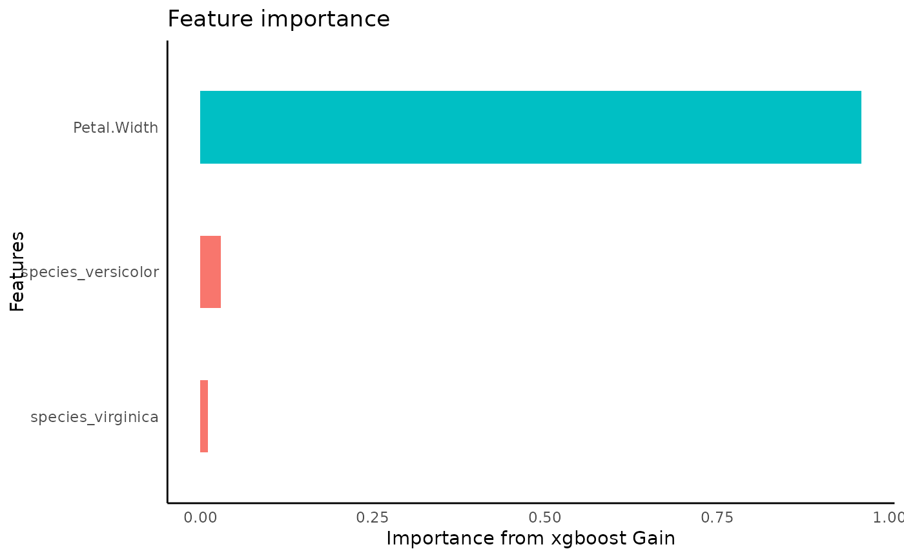

s3 method to extract params of a model with names consistent for use in the `autostats` package
get_params(model, ...)
# S3 method for xgb.Booster
get_params(model, ...)a model
additional arguments
list of params
iris %>%
framecleaner::create_dummies() -> iris_dummies
#> 1 column(s) have become 3 dummy columns
iris_dummies %>%
tidy_formula(target = Petal.Length) -> p_form
iris_dummies %>%
tidy_xgboost(p_form, mtry = .5, trees = 5L, loss_reduction = 2, sample_size = .7) -> xgb
#> Warning: `early_stop` was reduced to 4.
#> Warning: `early_stop` was reduced to 4.
#> accuracy tested on a validation set
#> # A tibble: 3 × 4
#> .metric .estimator .estimate target
#> <chr> <chr> <dbl> <chr>
#> 1 ccc standard 0.794 Petal.Length
#> 2 rmse standard 1.01 Petal.Length
#> 3 rsq standard 0.883 Petal.Length

## reuse these parameters to find the cross validated error
rlang::exec(auto_model_accuracy, data = iris_dummies, formula = p_form, !!!get_params(xgb))
#> Registered S3 method overwritten by 'tune':
#> method from
#> required_pkgs.model_spec parsnip
#> ! Fold1: preprocessor 1/1, model 1/1: `early_stop` was reduced to 4.
#> ! Fold2: preprocessor 1/1, model 1/1: `early_stop` was reduced to 4.
#> ! Fold3: preprocessor 1/1, model 1/1: `early_stop` was reduced to 4.
#> ! Fold4: preprocessor 1/1, model 1/1: `early_stop` was reduced to 4.
#> a flextable object.
#> col_keys: `model`, `metric`, `mean_score`, `std_err`
#> header has 2 row(s)
#> body has 2 row(s)
#> original dataset sample:
#> model metric mean_score std_err
#> 1 xgboost rmse 0.788 0.0759
#> 2 xgboost rsq 0.949 0.0176